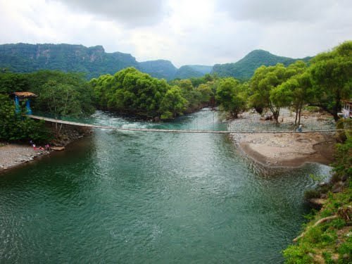

La natación en el río de Jalcomulco es otra de las actividades que tambien amo hacer en compañia de mi familia y/o amigos, por el clima de la localidad, solemos llevar comida y botanas para comer allá, desde pequeña me encanta ir a nadar al río, también porque mi casa está muy cerca de este, con las temperaturas tan altas paso mas tiempo en el río o a la orilla de este que en mi casa.
Me fascina la sensación de libertad y ligereza que se experimenta al nadar, como si los movimientos fluyeran sin esfuerzo en un ambiente completamente diferente al terrestre. Practicarla en piscinas me permite enfocarme en técnicas y resistencia, mientras que nadar en espacios abiertos, como el río, añade una dimensión de aventura y conexión con los elementos naturales. La frescura del agua o el silencio bajo la superficie crean un ambiente que me relaja y me ayuda a liberar tensiones acumuladas.
Su nombre viene del náhuatl “Xalkomolko”, “xalli” significa arena y “komol” es olla o agujero; mientras que “ko” significa en. Por lo tanto, su nombre significaría “En el rincón de la arena”. Se localiza a 29 km, (18 millas), de Xalapa, la capital del estado y a 359 km, (223 millas) de la Ciudad de México. Cuenta con una altitud de 340 m s. n. m.